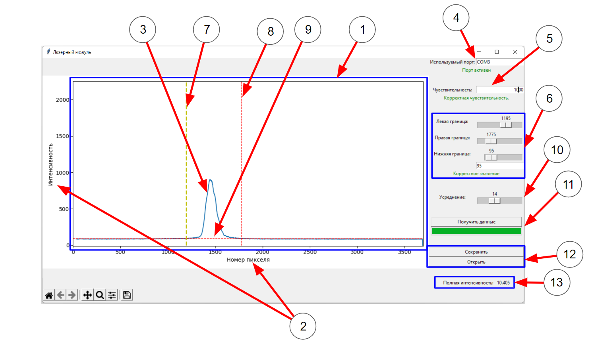
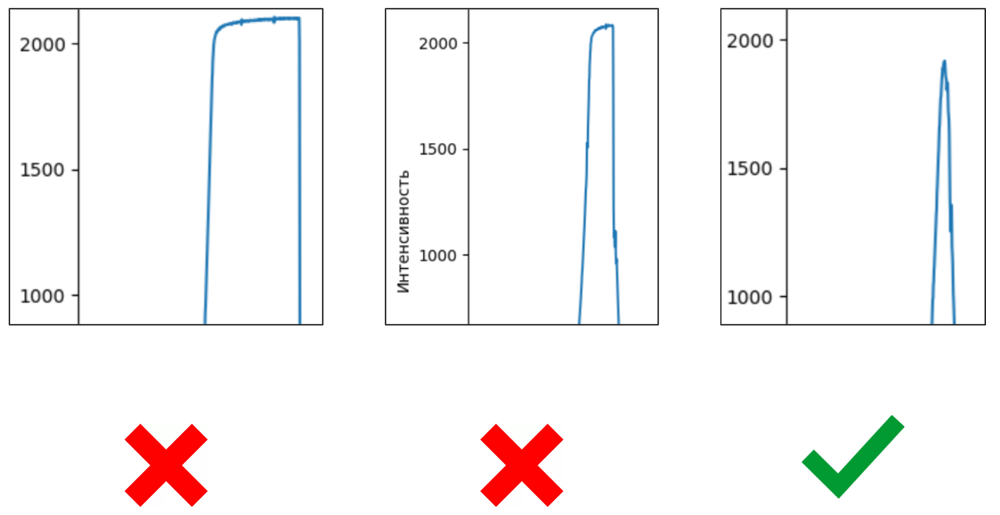
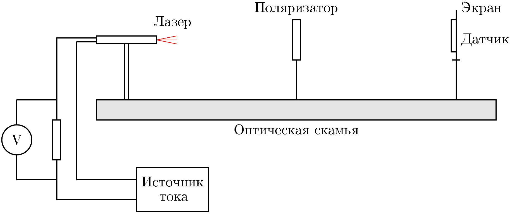
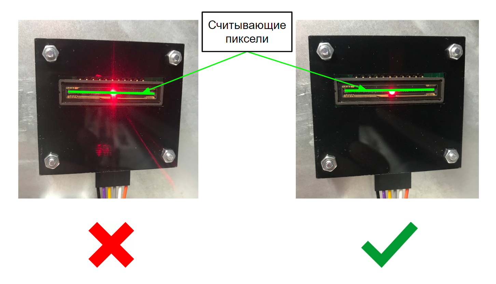

Fig. 1.
Y23 (2023) — English translation
This experiment is devoted to the study of laser radiation, one of the main inventions of the 20th century, used today in almost all areas of life, from physics to medicine. The main feature of the laser is that it emits monochromatic and highly polarized light, which makes it possible to create a very powerful, narrowly directed radiation flux. In our experiment, we study the characteristics of radiation such as power and degree of polarization depending on the current flowing through the laser.
Equipment: Optical bench Movable stands Steel screen Magnetic holders Laser module. Do not exceed 23 mA! Laser holder 1 Ohm resistor Connecting wires Multimeter (can only be used in voltmeter mode) Polarizer holders (2 pieces) Polarizers (2 pieces) DC power source CCD line (linear array of photodiodes) Laptop Masking tape

Данная программа позволяет считывать интенсивность света, падающего на чувствительные элементы датчика (CCD матрицу), а также производить с полученными данными определённые действия. Основные элементы программы: Поле графика Основные оси График интенсивности Поле для определения используемого порта Чувствительность датчика Виджет для настройки положения границ суммирования. Сверху вниз: «слайдер» левой границы, «слайдер» правой границы, «слайдер» нижней границы, текстовое поле для нижней границы Левая граница суммирования Правая граница суммирования Нижняя граница суммирования Полоса для усреднения Виджет построения графика Виджет сохранения и загрузки Полная интенсивность Алгоритм действий для начала работы с программой: подключите устройство для считывания к компьютеру через кабель. Выберите на панели «Используемый порт» (4) — COM3. Снизу под ней должна загореться зелёная надпись «Порт активен». Если этого не произошло, позовите наблюдателя и сообщите о проблеме. Считывание данных: Для считывания новых данных вам необходимо нажать на кнопку «Получить данные», которая находится в виджете получения данных (11). У вас есть возможность выбрать степень усреднения (10). Число, которое вы выбираете в этом виджете показывает сколько будет сделано измерений перед их усреднением. Усреднение позволяет избежать появление артефактов, а также шумов. Для того чтобы считывать сигналы с значительно различающимися интенсивностями, вы можете изменять чувствительность (5). Вводимое число должно быть делителем числа 50000. Работа с графиком, вычисление интенсивности: В данном эксперименте вам потребуется измерять относительную интенсивность излучения. Для этого в программе реализован модуль, позволяющий посчитать «площадь» под графиком распределения интенсивности. Расчёт приводится в правом нижнем виджете (13). ВНИМАНИЕ! Для определения абсолютной интенсивности надо разделить относительную интенсивность на значение чувствительности. Для расчёта площади под графиком в определённом диапазоне вы можете настраивать левую (7), правую (8), и нижнюю (9) границу интегрирования. Для настройки границ существует три способа: «Перетаскивание». С помощью компьютерной мыши вы можете перетаскивать линии границ. При наведении в «зону активации» перетаскивания граница увеличит свою толщину и поменяет цвет на желтый (именно в этом состоянии находится левая граница на изображении). Смещение границы происходит при зажатии ЛКМ (левая кнопка мыши) в «зоне активации»: цвет границы при движении поменяется на зеленый. При отжатии ЛКМ движение прекратится. Изменение с помощью «слайдера». Изменяя положение слайдеров из виджета (6) вы так же можете смещать границы. Численные значения соответствуют координатам на графике. Текстовое поле (только для нижней границы). В нижней части виджета (6) находится текстовое поле, которое позволяет более точно настраивать значение нижней границы. Сохранение и загрузка данных: Для того, чтобы сохранить и загрузить ранее сохранённые данные вам необходимо использовать виджет (12). Сохранение происходит в файл с разрешением .dat. Артефакты: иногда на графиках можно увидеть вертикальные полосы. Так бывает когда ваш сигнал очень низкий. Это можно исправить, включив усреднение по нескольким измерениям (10).
Основные элементы программы:
Алгоритм действий для начала работы с программой: подключите устройство для считывания к компьютеру через кабель. Выберите на панели «Используемый порт» (4) — COM3. Снизу под ней должна загореться зелёная надпись «Порт активен». Если этого не произошло, позовите наблюдателя и сообщите о проблеме.
Считывание данных: Для считывания новых данных вам необходимо нажать на кнопку «Получить данные», которая находится в виджете получения данных (11). У вас есть возможность выбрать степень усреднения (10). Число, которое вы выбираете в этом виджете показывает сколько будет сделано измерений перед их усреднением. Усреднение позволяет избежать появление артефактов, а также шумов. Для того чтобы считывать сигналы с значительно различающимися интенсивностями, вы можете изменять чувствительность (5). Вводимое число должно быть делителем числа 50000.
Работа с графиком, вычисление интенсивности: В данном эксперименте вам потребуется измерять относительную интенсивность излучения. Для этого в программе реализован модуль, позволяющий посчитать «площадь» под графиком распределения интенсивности. Расчёт приводится в правом нижнем виджете (13).
Для определения абсолютной интенсивности надо разделить относительную интенсивность на значение чувствительности.
Для расчёта площади под графиком в определённом диапазоне вы можете настраивать левую (7), правую (8), и нижнюю (9) границу интегрирования. Для настройки границ существует три способа:
Сохранение и загрузка данных: Для того, чтобы сохранить и загрузить ранее сохранённые данные вам необходимо использовать виджет (12). Сохранение происходит в файл с разрешением .dat.
Артефакты: иногда на графиках можно увидеть вертикальные полосы. Так бывает когда ваш сигнал очень низкий. Это можно исправить, включив усреднение по нескольким измерениям (10).
При достаточно большой интенсивности света, попадающего на пиксели датчика, они «засвечиваются». «Засвеченные» пиксели некорректно отображают интенсивность света на них: их показания находятся около 2000 условных единиц по вертикальной оси. Распознать «засветку» можно по характерному изменению вида пика. Ниже представлен образец «правильной» формы пика, а также несколько «неправильных».

In this problem, the following notation will be used: $J$ - the strength of the current flowing through the laser; $I$ - the total absolute intensity of light incident on the sensor (see the equipment drawing in part A), measured in arbitrary units; $P$ is the power of light emitted by the laser.
In this problem the following notation will be used:
In the first part of the problem, you are asked to investigate how the intensity of light passing through a polarizer depends on the angle of rotation of the polarizer.
Note: Consider the rotation angle to be 0 if the zero division of the polarizer is at the lowest point.
Build the following setup:

Set the source voltage so that the current $J$ through the laser is $\sim 10~мА$.
Install a second polarizer between the already installed one and the screen.
Set the angle $\theta_\mathrm{max}$ on the first polarizer.
As was defined earlier, the light emitted by a laser consists of 2 components: linearly polarized $I_{лин}$ and natural $I_{непол}$. The degree of laser polarization $\beta$ is determined by the following formula: $$\beta = \frac{I_{лин}}{I_{лин}+I_{непол}}=\frac{I_\mathrm{max}-I_\mathrm{min}}{I_\mathrm{max}+I_\mathrm{min}},$$где $I_\mathrm{max}$ и $I_\mathrm{min}$ — регистрируемые максимальные и минимальные интенсивности при вращении поляризатора. В данной части эксперимента вам предстоит исследовать зависимость степени поляризации от величины силы тока $J$, протекающего через лазер.
ВНИМАНИЕ! Для того, чтобы избежать «зашкаливаний», вам предлагается юстировать вашу установку таким образом, чтобы центр пятна от лазера находился ниже линии пикселей датчика. Чтобы убедится в правильности юстировки, проверьте, что при данном расположении лазера при максимально допустимом токе и минимальном значении чувствительности вы можете измерить $I_\mathrm{min}$ без «засветки».
Для того, чтобы избежать «зашкаливаний», вам предлагается юстировать вашу установку таким образом, чтобы центр пятна от лазера находился ниже линии пикселей датчика. Чтобы убедится в правильности юстировки, проверьте, что при данном расположении лазера при максимально допустимом токе и минимальном значении чувствительности вы можете измерить $I_\mathrm{min}$ without “exposure”.

For large values of $J$, the detector you are using will go “off scale” when directly measuring $I_\mathrm{max}$. Therefore, you need to propose a method that does not require measuring the maximum intensity directly.
Another important characteristic of a laser is its radiation power. In this part of the problem you are required to investigate how the indicated power $P$ depends on the current $J$ flowing through the laser.
Note: In fact, a real polarizer absorbs some of the light energy even with “allowed” polarization, but you can ignore this effect for this part of the problem.
Let $I_{полн}$ be the intensity of light that would hit the sensor in the absence of a polarizer.
The measurements in the previous part allowed for slight changes in the position of the laser spot on the sensor, since only the ratio of $I_\mathrm{max}$ and $I_\mathrm{min}$ was important, but now such changes can lead to significant errors in the results. Therefore, in this part you need to remove the dependence of $I_\mathrm{min}$ on the current $J$, trying to avoid displacement of the installation elements.
Let's define $i(J) = \frac{I_{полн}(J)}{I_{полн}(10~мА)}$.
In the further part of the problem, you can assume that at $J = 10~мА$ the power of light emitted by the laser is $P(10~мА) = 5~мВт$.
Let $n_e$ electrons pass through the laser per unit time, while $n_{\gamma}$ photons are emitted by the laser per unit time. Let a small increase in the value $n_e$, equal to $\mathrm dn_e$, lead to a small increase in the value $n_{\gamma}$, equal to $\mathrm dn_{\gamma}$. The differential quantum efficiency is the quantity $\eta$, determined by the formula: $$ \eta = \frac{\mathrm dn_{\gamma}}{\mathrm dn_{e}}. $$Энергия одного фотона определяется формулой:$$ E = h \nu, $$где $\nu$ — частота излучаемого света, $h$ — постоянная Планка. При расчётах используйте значения: $h = 6.626 \cdot 10^{-34} ~J \cdot s$; Длина волны используемого лазера $\lambda = 630~nm$; Скорость света $c = 3 \cdot 10^8~m/s$; Заряд электрона $e = 1.6 \cdot 10^{-19}~Kl$
Пусть через лазер за единицу времени проходит $n_e$ электронов, при этом за единицу времени лазером излучается $n_{\gamma}$ фотонов. Пусть малый прирост величины $n_e$, равный $\mathrm dn_e$, привёл к малому приросту величины $n_{\gamma}$, равному $\mathrm dn_{\gamma}$. Дифференциальной квантовой эффективностью называется величина $\eta$, определяемая по формуле:$$ \eta = \frac{\mathrm dn_{\gamma}}{\mathrm dn_{e}}. $$Энергия одного фотона определяется формулой:$$ E = h \nu, $$где $\nu$ — частота излучаемого света, $h$ is Planck’s constant.
When making calculations, use the following values:
Source: https://pho.rs/p/3494